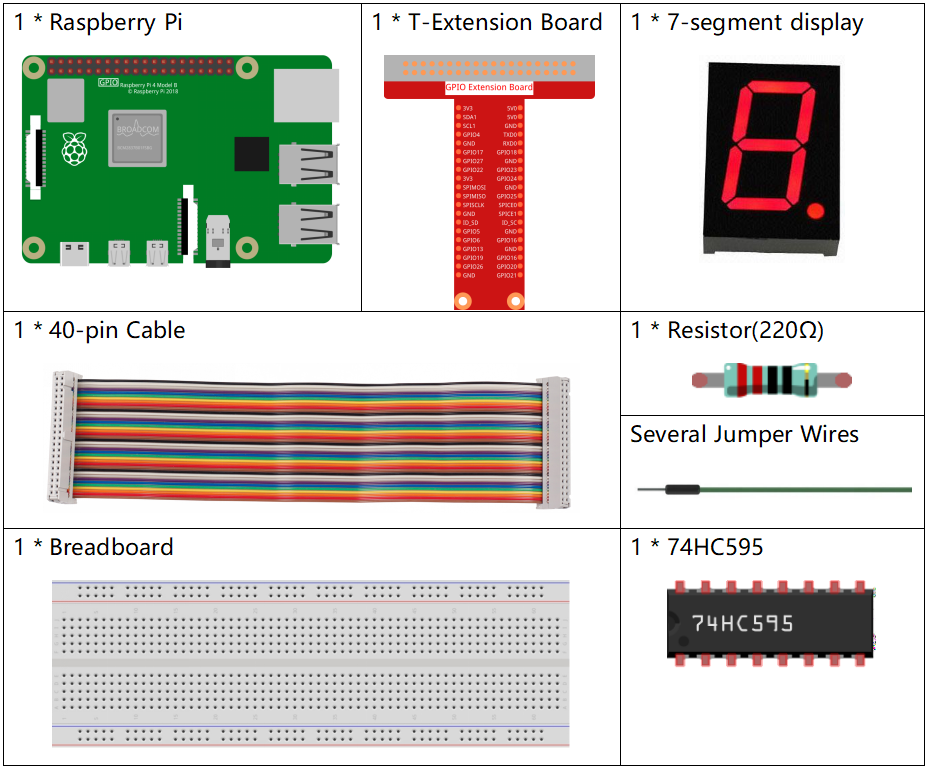
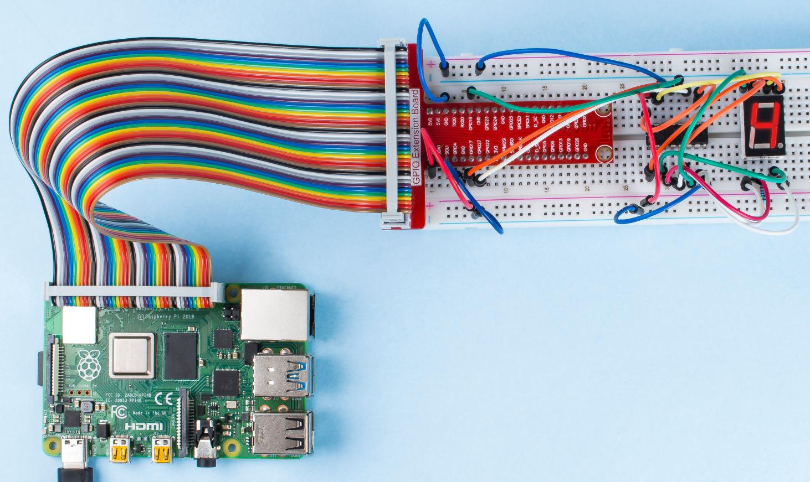

1.1.4 7-Segment-Anzeige¶
Einführung¶
Versuchen wir, eine 7-Segment-Anzeige anzutreiben, um eine Nummer von 0 bis 9 und von A bis F anzuzeigen.
Komponenten¶
Prinzip¶
7-Segment-Anzeige
Ein 7-Segment-Display ist eine 8-förmige Komponente, die 7 LEDs enthält. Jede LED wird als Segment bezeichnet. Bei Erregung ist ein Segment Teil einer anzuzeigenden Ziffer.
Es gibt zwei Typen von Pin-Verbindungen: Common Cathode (CC) und Common Anode (CA). Wie der Name schon sagt, sind an einer CC-Anzeige alle Kathoden der 7 LEDs angeschlossen, wenn an einer CA-Anzeige alle Anoden der 7 Segmente angeschlossen sind. In diesem Kit verwenden wir der erstere.

Jede der LEDs im Display erhält ein Positionssegment, wobei einer der Verbindungsstifte aus dem rechteckigen Kunststoffgehäuse herausgeführt wird. Diese LED-Pins sind von „a“ bis „g“ bezeichnet und repräsentieren jede einzelne LED. Die anderen LED-Pins sind miteinander verbunden und bilden einen gemeinsamen Pin. Wenn Sie also die entsprechenden Pins der LED-Segmente in einer bestimmten Reihenfolge nach vorne vorspannen, werden einige Segmente heller und andere dunkel bleiben, wodurch das entsprechende Zeichen auf dem Display angezeigt wird.
Koden anzeigen
Damit Sie wissen können, wie 7-Segment-Anzeigen (Common Cathode) Numbers anzeigen, haben wir die folgende Tabelle gezeichnet. Nummer sind die Nummer 0-F, die auf der 7-Segment-Anzeige angezeigt werden. (DP) GFEDCBA bezieht sich auf die entsprechende LED, die auf 0 oder 1 gesetzt ist. Beispielsweise bedeutet 00111111, dass DP und G auf 0 gesetzt sind, während andere auf 1 gesetzt sind. Daher wird die Nummer 0 auf dem 7-Segment-Display angezeigt, während der HEX-Kode der Hexadezimalzahl entspricht.

74HC595
Der 74HC595 besteht aus einem 8-Bit-Schieberegister und einem Speicherregister mit parallelen Ausgängen mit drei Zuständen. Es wandelt den seriellen Eingang in einen parallelen Ausgang um, sodass Sie E / A-Ports einer MCU speichern können.
Wenn MR (Pin 10) einen hohen Niveaul und OE (Pin 13) einen niedrigen Niveaul aufweist, werden Daten in die ansteigende Flanke von SHcp eingegeben und gehen über die ansteigende Flanke von SHcp in das Speicherregister. Wenn die beiden Takte miteinander verbunden sind, ist das Schieberegister immer einen Impuls früher als das Speicherregister. Es gibt einen seriellen Verschiebungseingangspin (Ds), einen seriellen Ausgangspin (Q) und eine asynchrone Rücksetztaste (niedriger Niveaul) im Speicherregister. Das Speicherregister gibt einen Bus mit einem parallelen 8-Bit und in drei Zuständen aus. Wenn OE aktiviert ist (niedriger Niveaul), werden die Daten im Speicherregister an den Bus ausgegeben.

Pins von 74HC595 und ihre Funktionen:
Q0-Q7: Parallele 8-Bit-Datenausgangspins, mit denen 8 LEDs oder 8
Pins der 7-Segment-Anzeige direkt gesteuert werden können.
um mehrere 74HC595 in Reihe zu schalten.
MR: Reset-Pin, aktiv bei niedrigem Niveau;
SHcp: Zeitsequenz-Eingabe des Schieberegisters. Bei der ansteigenden Flanke bewegen
sich die Daten im Schieberegister nacheinander um ein Bit, dh die Daten in Q1 sich zu Q2 und so weiter bewegen. Während der fallenden Flanke bleiben die Daten im Schieberegister unverändert.
STcp: Zeitsequenz-Eingabe des Speicherregisters. Bei steigender Flanke werden Daten im
Schieberegister in das Speicherregister verschoben.
CE: Ausgangsfreigabepin, aktiv auf niedrigem Niveau.
DS: Serieller Dateneingangspin
VCC: Positive Versorgungsspannung
GND: Boden
Schematische Darstellung¶
Verbinden Sie Pin ST_CP von 74HC595 mit Raspberry Pi GPIO18, SH_CP mit GPIO27, DS mit GPIO17 und parallele Ausgangsanschlüsse mit 8 Segmenten der LED-Segmentanzeige. Geben Sie Daten in den DS-Pin in das Schieberegister ein, wenn sich SH_CP (der Takteingang des Schieberegisters) an der ansteigenden Flanke befindet, und in das Speicherregister, wenn sich ST_CP (der Takteingang des Speichers) an der ansteigenden Flanke befindet. Anschließend können Sie die Zustände von SH_CP und ST_CP über die Raspberry Pi-GPIOs steuern, um die serielle Dateneingabe in eine parallele Datenausgabe umzuwandeln, um Raspberry Pi-GPIOs zu speichern und die Anzeige zu steuern.
T-Karte Name |
physisch |
wiringPi |
BCM |
GPIO17 |
Pin 11 |
0 |
17 |
GPIO18 |
Pin 12 |
1 |
18 |
GPIO27 |
Pin 13 |
2 |
27 |

Experimentelle Verfahren¶
Schritt 1: Bauen Sie die Schaltung auf.

Für Benutzer in C-Sprache¶
Schritt 2: Gehen Sie in den Ordner der Kode.
cd /home/pi/davinci-kit-for-raspberry-pi/c/1.1.4/
Schritt 3: Kompilieren.
gcc 1.1.4_7-Segment.c -lwiringPi
Schritt 4: Führen Sie die obige ausführbare Datei aus.
sudo ./a.out
Nachdem der Code ausgeführt wurde, wird die 7-Segment-Anzeige 0-9, A-F angezeigt.
Kode
#include <wiringPi.h>
#include <stdio.h>
#define SDI 0 //serial data input
#define RCLK 1 //memory clock input(STCP)
#define SRCLK 2 //shift register clock input(SHCP)
unsigned char SegCode[16] = {0x3f,0x06,0x5b,0x4f,0x66,0x6d,0x7d,0x07,0x7f,0x6f,0x77,0x7c,0x39,0x5e,0x79,0x71};
void init(void){
pinMode(SDI, OUTPUT);
pinMode(RCLK, OUTPUT);
pinMode(SRCLK, OUTPUT);
digitalWrite(SDI, 0);
digitalWrite(RCLK, 0);
digitalWrite(SRCLK, 0);
}
void hc595_shift(unsigned char dat){
int i;
for(i=0;i<8;i++){
digitalWrite(SDI, 0x80 & (dat << i));
digitalWrite(SRCLK, 1);
delay(1);
digitalWrite(SRCLK, 0);
}
digitalWrite(RCLK, 1);
delay(1);
digitalWrite(RCLK, 0);
}
int main(void){
int i;
if(wiringPiSetup() == -1){ //when initialize wiring failed, print messageto screen
printf("setup wiringPi failed !");
return 1;
}
init();
while(1){
for(i=0;i<16;i++){
printf("Print %1X on Segment\n", i); // %X means hex output
hc595_shift(SegCode[i]);
delay(500);
}
}
return 0;
}
Kode Erklärung
unsigned char SegCode[16] = {0x3f,0x06,0x5b,0x4f,0x66,0x6d,0x7d,0x07,0x7f,0x6f,0x77,0x7c,0x39,0x5e,0x79,0x71}; Ein Segmentcode-Array von 0 bis F in hexadezimaler Darstellung (gemeinsame Kathode).
void init(void){
pinMode(SDI, OUTPUT);
pinMode(RCLK, OUTPUT);
pinMode(SRCLK, OUTPUT);
digitalWrite(SDI, 0);
digitalWrite(RCLK, 0);
digitalWrite(SRCLK, 0);
}
Setzen Sie ds, st_cp, sh_cp drei Pins auf OUTPUT und den Anfangszustand auf 0. void hc595_shift(unsigned char dat){} Zuweisen eines 8-Bit-Werts zum Schieberegister des 74HC595.
digitalWrite(SDI, 0x80 & (dat << i));
Ordnen Sie die Datendaten SDI (DS) in Bits zu. Hier nehmen wir an, dass dat = 0x3f (0011 1111, wenn i = 2, 0x3f 2 Bits nach links (<<) verschiebt. 1111 1100 (0x3f << 2) & 1000 0000 (0x80) = 1000 0000 ist wahr.
digitalWrite(SRCLK, 1);
- Der Anfangswert von SRCLK wurde auf 0 gesetzt, und hier wird er auf 1 gesetzt, um einen Anstiegsflankenimpuls zu erzeugen und dann das DS-Datum in das Schieberegister zu verschieben.
digitalWrite(RCLK, 1);
Der Anfangswert von RCLK wurde auf 0 gesetzt, und hier wird er auf 1 gesetzt, um eine ansteigende Flanke zu erzeugen und dann Daten vom Schieberegister zum Speicherregister zu verschieben.
while(1){
for(i=0;i<16;i++){
printf("Print %1X on Segment\n", i); // %X means hex output
hc595_shift(SegCode[i]);
delay(500);
}
}
In dieser for Schleife verwenden wir „%1X“ , um i als Hexadezimalzahl auszugeben. Wenden Sie i an, um den entsprechenden Segmentkode im Segkode [] -Array zu finden, und verwenden Sie hc595_shift (), um den Segkode in das Schieberegister des 74HC595 zu übergeben.
Für Python-Sprachbenutzer¶
Schritt 2: Gehen Sie in den Ordner der Kode.
cd /home/pi/davinci-kit-for-raspberry-pi/python/
Schritt 3: Ausführen.
sudo python3 1.1.4_7-Segment.py
Nachdem der Code ausgeführt wurde, wird die 7-Segment-Anzeige 0-9, A-F angezeigt.
Kode
import RPi.GPIO as GPIO
import time
# Set up pins
SDI = 17
RCLK = 18
SRCLK = 27
# Define a segment code from 0 to F in Hexadecimal
segCode = [0x3f,0x06,0x5b,0x4f,0x66,0x6d,0x7d,0x07,0x7f,0x6f,0x77,0x7c,0x39,0x5e,0x79,0x71]
def setup():
GPIO.setmode(GPIO.BCM)
GPIO.setup(SDI, GPIO.OUT, initial=GPIO.LOW)
GPIO.setup(RCLK, GPIO.OUT, initial=GPIO.LOW)
GPIO.setup(SRCLK, GPIO.OUT, initial=GPIO.LOW)
# Shift the data to 74HC595
def hc595_shift(dat):
for bit in range(0, 8):
GPIO.output(SDI, 0x80 & (dat << bit))
GPIO.output(SRCLK, GPIO.HIGH)
time.sleep(0.001)
GPIO.output(SRCLK, GPIO.LOW)
GPIO.output(RCLK, GPIO.HIGH)
time.sleep(0.001)
GPIO.output(RCLK, GPIO.LOW)
def main():
while True:
# Shift the code one by one from segCode list
for code in segCode:
hc595_shift(code)
print ("segCode[%s]: 0x%02X"%(segCode.index(code), code)) # %02X means double digit HEX to print
time.sleep(0.5)
def destroy():
GPIO.cleanup()
if __name__ == '__main__':
setup()
try:
main()
except KeyboardInterrupt:
destroy()
Kode Erklärung
segCode = [0x3f,0x06,0x5b,0x4f,0x66,0x6d,0x7d,0x07,0x7f,0x6f,0x77,0x7c,0x39,0x5e,0x79,0x71]
Ein Segmentcode-Array von 0 bis F in hexadezimaler Darstellung (gemeinsame Kathode).
def setup():
GPIO.setmode(GPIO.BCM)
GPIO.setup(SDI, GPIO.OUT, initial=GPIO.LOW)
GPIO.setup(RCLK, GPIO.OUT, initial=GPIO.LOW)
GPIO.setup(SRCLK, GPIO.OUT, initial=GPIO.LOW)
Setzen Sie ds, st_cp, sh_cp auf drei Pins und den Ausgangszustand auf niedrigen Niveau.
GPIO.output(SDI, 0x80 & (dat << bit))
Ordnen Sie die Datendaten SDI (DS) in Bits zu. Hier nehmen wir an, dass dat = 0x3f (0011 1111, wenn Bit = 2, 0x3f 2 Bits nach rechts (<<) verschiebt. 1111 1100 (0x3f << 2) & 1000 0000 (0x80) = 1000 0000 ist wahr.
GPIO.output(SRCLK, GPIO.HIGH)
Der Anfangswert von SRCLK war auf NIEDRIG gesetzt, und hier wird er auf HIGH gesetzt, um einen ansteigenden Flankenimpuls zu erzeugen und dann das DS-Datum in das Schieberegister zu verschieben.
GPIO.output(RCLK, GPIO.HIGH)
Der Anfangswert von RCLK wurde auf NIEDRIG gesetzt, und hier wird er auf HOCH gesetzt, um eine ansteigende Flanke zu erzeugen und dann Daten vom Schieberegister zum Speicherregister zu verschieben.
Bemerkung
Das hexadezimale Format der Nummer 0 bis 15 ist (0, 1, 2, 3, 4, 5, 6, 7, 8, 9, A, B, C, D, E, F).
Phänomen Bild
